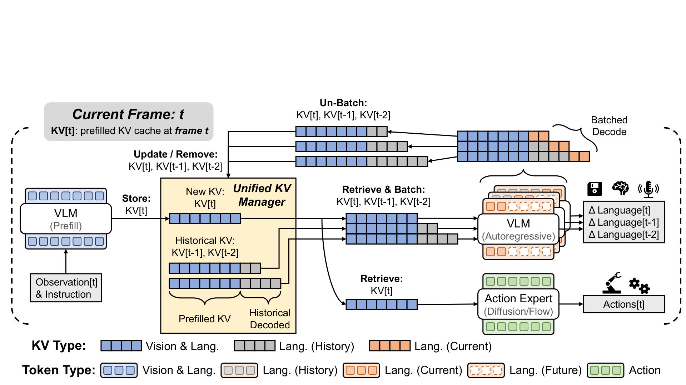
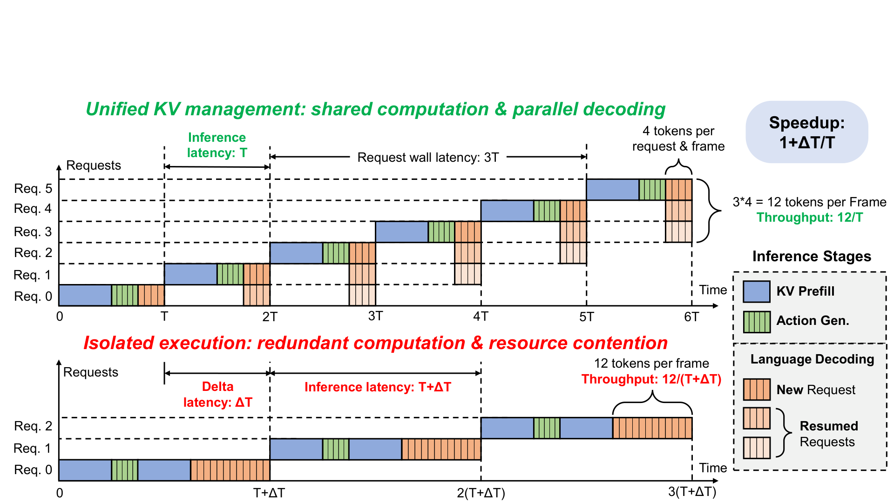

论文信息
| 作者 | Xiangyu Li、Huaizhi Tang、Xin Ding、Weijun Wang、Ting Cao、Yunxin Liu |
|---|---|
| 机构 | 清华大学智能产业研究院（AIR）、清华大学电子工程系、中国科学技术大学 |
| 一句话 | 将 MoT VLA 的 KV cache 从“每个任务各自持有的中间结果”提升为跨任务、跨控制周期共享和调度的系统资源。 |
1. 核心摘要
OxyGen 关注的不是让 VLA 学到更强的视觉或控制策略，而是一个常被忽略的部署问题：同一机器人观测在同一个控制周期内，可能同时服务动作生成、语言交互和文本记忆构建。Mixture-of-Transformers（MoT）VLA 虽能用不同 expert 产生异质输出，但现有运行时仍让每个任务各自 prefill、各自维护 KV cache，导致共享观测被重复编码，并让有严格实时要求的动作解码与可以跨帧完成的语言解码争抢资源。
论文将 KV cache 定义为跨 expert、跨帧的一等资源。其一，cross-task KV sharing 将一次共享 backbone prefill 产生的观测 KV 同时提供给 action expert 和 language expert；其二，cross-frame continuous batching 把尚未完成的语言请求跨控制周期持久化，在每帧固定 decoding budget 内联合推进。以 \(\pi_{0.5}\) 为实现对象，OxyGen 在 RTX 4090 上同时达到超过 200 tokens/s 的语言吞吐和 70 Hz 动作频率，相对 isolated execution 最高加速 3.7 倍。
2. 研究动机
MoT 的模型结构并不自动带来多任务推理效率
传统 VLA 多集中在动作输出；若同时需要对话或记忆，通常要并行运行 VLA 与 VLM。MoT VLA 共享视觉语言 backbone，并将不同模态输出路由给 action 和 language expert，理论上适合在一个模型中完成控制与语言任务。然而“模型能多任务”不等于“运行时会复用共同计算”：如果任务 A 和任务 B 都对同一帧观测各自 prefill，得到的观测 KV 在计算上重复、在显存上分离。
动作与语言具有不对称 deadline
动作 expert 必须在当前控制周期内完成，才能维持机器人动作频率；一条语言记忆、问答或计划文本则可以跨多个周期逐步生成。若强制一帧内完成全部语言 token，下一次动作更新会被拖慢；若每帧只推进一个请求的一小段，又会浪费可批处理的吞吐空间。因此目标不是只压低单次延迟，而是在动作频率约束下最大化语言吞吐。
本文的切入点：管理共享状态，而非仅优化单模型算子
作者将两类问题归因于“isolated KV cache management”：缓存只属于单请求，因而无法共享 prefix，也无法保存跨帧未完成语言生成的状态。OxyGen 的关键观察是，同一 VLM backbone 从观测产生的 KV 是模态无关的；只要明确 action 和 language expert 对它的读写生命周期，就能把重复 prefill 转为共享，并将语言生成排入不破坏控制 deadline 的连续批处理。
3. 方法论

Figure 2：统一 KV cache manager 在单个控制周期内共享观测 prefill，并保存跨帧语言请求的解码状态。
3.1 MoT VLA 的预填充与 expert 输出
在控制周期 \(t\)，观测 \(o_t\) 包含当前视觉输入和语言指令。共享 VLM backbone \(\Theta_{\mathrm{VLM}}\) 先执行 prefill，在每层产生 hidden states、keys 和 values；所有层的 \((K_{t,l},V_{t,l})\) 组成观测缓存 \(\mathcal{K}_t\)。论文强调 \(\mathcal{K}_t\) 尚未绑定输出模态：action expert 可据此经扩散或 flow-matching 的 \(S\) 个去噪步生成 action chunk \(A_t\)，language expert 则可自回归地产生文本 token \(y_t\)。
形式上，论文将共享 prefill 写为 \(\{(h_{t,l},K_{t,l},V_{t,l})\}_{l=1}^{L}=\Theta_{\mathrm{VLM}}(o_t)\)，并令 \(\mathcal{K}_t=\{(K_{t,l},V_{t,l})\}_{l=1}^{L}\)。两个 expert 的条件分布分别为 \(p_{\Theta_{\mathrm{Act}}}(A_t\mid\mathcal{K}_t)\) 与 \(p_{\Theta_{\mathrm{Lang}}}(y_t\mid\mathcal{K}_t)\)。这一区分很重要：OxyGen 没有让 action 和 language 强行共享输出 head，而是共享二者确实共同依赖的观测表示。
3.2 Cross-task KV sharing：一次 prefill，多个 consumer
isolated execution 会为动作和语言任务分别运行 shared backbone，造成同一观测被多次编码。OxyGen 让 manager 在当前帧只生成一次 \(\mathcal{K}_t\)：action expert 读取其 prefill 部分完成去噪；language expert 则以同一 prefill 初始化自己的生成状态。共享的是静态观测 prefix，而 language 之后新增 token 的 KV 属于该语言请求自身，因此不会混淆 action 与语言的不同生成语义。
3.3 可恢复的语言生成状态
每个未完成语言请求维护状态 \(\sigma _t=(\mathcal{K}_t,y_t,\delta _t)\)：缓存保存 prefill 及已解码 token 的 KV，\(y_t\) 保存目前输出，\(\delta _t\) 指示是否因 EOS 或最大长度而结束。manager 对请求状态提供 Store、Retrieve、Update、Remove，并将所有活跃请求组成集合 \(R\)。这使语言生成在帧末可以暂停，在下一控制周期无需重新 prefill 即可继续。
3.4 Cross-frame continuous batching：把 soft-deadline 工作分摊到多帧

Figure 3：语言请求跨多个控制周期保留并合并批处理；动作路径仍按每帧截止时间执行。
在每帧，当前帧产生的新请求加入活跃集合；manager 将所有未结束的 \(\sigma\) 沿 batch 维堆叠，并在该帧仅推进 \(k\) 个 decoding step。若每帧到来一个请求、同时有 \(B\) 个活跃请求，则稳态语言吞吐为 \(\tau =Bk/T\)，动作频率为 \(f=H/T\)，其中 \(T\) 是帧延迟、\(H\) 是每帧输出动作数。系统优化目标为最大化 \(\tau\)，约束 \(f\ge f_{\min}\)。较小 \(k\) 会让单个请求完成得更慢，却增加同时活跃的请求数并提高批处理摊销；论文实现使用固定 \(k\)，将配置选择留给部署时的 workload profiling。
3.5 面向历史记忆的含义
对于本课题，OxyGen 解决的是“已决定写一条文本/事件记忆后，如何不影响控制频率地生成它”，而不决定“是否应该写入”。事件检测模块可在确认关键状态转移时创建语言或结构化记忆请求；OxyGen 把该请求放入跨帧队列，使记忆构建利用动作执行期间的空隙。事件显著性仍应由 motion、appearance、gripper/contact 和 task phase 等信号决定。
4. 实验与结果
设置。作者以 \(\pi_{0.5}\) 为主，运行于 RTX 4090 与 Jetson AGX Thor，并在 LIBERO、ALOHA、DROID 配置上比较 sequential isolated execution、parallel isolated execution 与 OxyGen。额外在 Xiaomi-Robotics-0、StarVLA 以及真实人形机器人上评估。核心指标为 action frequency、language throughput、frame latency，以及动作质量和资源效率。
| 证据 | 原文数值 | 解读 |
|---|---|---|
| 端到端动作/语言权衡 | 相同输出长度下相对 sequential isolated execution 提升 1.2–3.7\(\times\) | 共享 prefill 与跨帧批处理同时改善动作频率和聚合语言吞吐，而非以其一牺牲另一。 |
| 仅启用 KV sharing（RTX 4090、LIBERO、\(S=10\)、\(N=5\)） | frame latency 200.3 ms → 145.1 ms，1.4\(\times\) | 重复 prefill 是可独立消除的成本。 |
| KV sharing 后再启用 batching（\(N=30\), \(k=5\)） | 469.3 ms → 175.8 ms，2.7\(\times\)；21.3 Hz → 56.9 Hz | 跨帧合批主要解决语言输出变长时的解码拖累。 |
| 真实机器人 | isolated 1030 ms → OxyGen 393 ms | 动作下发后语言解码可与物理执行重叠；这是部署链路而非纯合成 benchmark 的验证。 |
迁移实验中，论文在 \(N=30,k=5\) 下报告 Xiaomi-Robotics-0 和 Qwen3VL-PI_v3 分别为 3.23\(\times\)、3.60\(\times\)；当 \(k=1\) 时增加至 5.83\(\times\)、6.64\(\times\)。增加 action expert 数也会提高可消除的重复 prefill：三、四 expert 设置在 \(N=30,k=5\) 下达到 3.53\(\times\)、3.69\(\times\)。这些结果说明收益随可共享工作和跨帧 backlog 增加，而不是某个固定 VLA 的偶然实现细节。
5. 优势与局限
| 优势 | 局限与迁移注意点 |
|---|---|
|
|
6. 总结
OxyGen 将 KV cache 从 transformer 的被动中间产物升级为多任务 embodied agent 的共享调度对象。cross-task sharing 解决共同观测的重复编码，cross-frame batching 则让可延后的语言任务不再阻塞高频控制。它为“控制、对话、事件记忆构建并行发生”的 VLA 提供了明确系统层模板。
对历史关键事件检测而言，最值得复用的接口是：事件模块只在确认转移时创建记忆请求，统一 KV manager 再将其按控制 deadline 分批完成。这样“何时写”与“如何高效写”被清晰解耦：前者由事件语义决定，后者由共享缓存和调度保证。